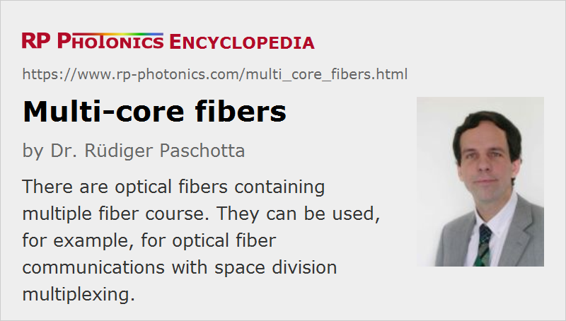

Multi-core Fibers
Acronym: MCF
Definition: optical fibers containing more than one fiber core
Alternative term: multicore fibers
More general term: optical fibers
Opposite term: single-core fibers
German: Mehrkernfasern
Categories: fiber optics and waveguides, lightwave communications
How to cite the article; suggest additional literature
Author: Dr. Rüdiger Paschotta
Most optical fibers have a single fiber core, which is usually located on the fiber axis. However, there are also specialty fibers containing multiple cores, which may e.g. be arranged on a ring around the fiber axis or on some 2D grid. (For example, a seven-core fiber may have six cores on the edges of the hexagon and a central core in addition – see Figure 1.) Such fibers are called multi-core fibers (or multicore fibers).
Fabrication
Multi-core fibers can be realized with classical all-glass fiber technology or alternatively as photonic crystal fibers containing air holes. In the first case, an all-glass preform must be fabricated which contains multiple cores. Not all standard fabrication techniques for preforms can be used for such structures, but e.g. the rod-in-tube technique. For photonic crystal fibers, no special extension of the fabrication technology is required; one can simply assemble a more complex bundle of rods and/or tubes to obtain a preform with multiple cores.
Guiding in Multiple Cores
In principle, each of the fiber cores in such a fiber can act as a separate waveguide, so that light can independently propagate through those cores. However, there can be some mode coupling between the cores (see Figure 2) if the distance between two cores is so small that the corresponding mode fields have a significant spatial overlap. This means that light which is initially coupled into one core can eventually couple over to other cores; that effect is similar as in fused fiber couplers.
For such a situation, one can compute so-called supermodes, i.e., field configurations which are stationary despite the coupling. Note, however, that supermodes calculated in mode coupling theory for an idealized situation may not be the true modes of a fiber subject to random fluctuations in fabrication and/or due to operation conditions. Light propagation in such fibers can also be investigated with methods of numerical beam propagation, where one may also take into account random fluctuations.
Although in some cases the mentioned kind of coupling is desired, in many others it is avoided or minimized by using large enough spacings between the cores. For example, one often wants to avoid substantial crosstalk in optical fiber communication systems. Often, the fiber cores have rather small diameters of a few micrometers, so that single-mode propagation is obtained in some wavelength range. A distance of the order of 30 to 40 μm between each pair of cores may then be sufficient to avoid significant coupling even within kilometers of fiber. The usual fiber diameter of 125 μm then allows only for a quiet limited number of cores in such weakly-coupled fibers. There is obviously a trade-off between a high core density and low crosstalk e.g. in telecom systems. That trade-off can be mitigated in various ways, e.g. by reducing the coupling by stronger mode confinement (e.g. with refractive index trenches or air holes around the cores), or with heterogeneous designs where the different core modes have different effective refractive indices. In principle, one can also increase the fiber diameter, but that is often not practical, because the sensitivity of the fiber to bending is then increased.
Telecom Applications
In optical fiber communications, there is a long-term trend towards more and more expanding the transmission capacities, as data traffic keeps growing at a large rate. Obviously, there is thus an interest in maximizing the transmission capacity per fiber, and one of the technological options is using multiple cores in one fiber, so that multiple signals can be simultaneously transmitted with spatial separation (space division multiplexing, SDM). That principle can also be realized with few-mode fibers or multimode fibers, but multi-core fibers allow for realization with much weaker coupling between the channels. The two approaches may even be combined when using multiple multimode cores, which can result in a larger number of transmission channels.
When using fibers with negligibly weak coupling between the cores over the full transmission distance, the system can be conceptually simpler. However, fibers with relatively strong mode coupling can also be employed, using techniques of multiple-input multiple-output (MIMO) digital signal processing. In the latter case, the spacing between the cores can be much smaller, so that more fiber cores can be placed in a single fiber, and the overall transmission capacity can be higher. The same kind of techniques can be used in conjunction with few-mode fibers and multimode fibers. Compared with those, single-mode multi-core fibers have the advantage that the spread of group velocities is much smaller, which allows the use of MIMO receiver with smaller complexity.
A substantial technical challenge for the industrial use of multi-core fibers is the need to couple light for multiple signal channels into the different cores of the fiber, and to handle outputs from multiple cores. Suitable coupler devices also have to satisfy a number of practical requirements. One of the proposed solutions is to use laser-inscribed 3D waveguides in a small glass block, which connect different cores of a MCF with the cores of a set of output or input fibers which are arranged in a linear sequence [3].
Another challenge is that splicing of multi-core fibers is obviously more difficult than for ordinary single-core fibers.
For long transmission distances, fiber amplifiers are often employed. Special erbium-doped fiber amplifiers for multi-core fibers have been developed, where simultaneous amplification for all the cores is achieved, in some cases even using only a single pump source. Further research and development of such multi-core EDFAs [6] is required, paying attention to technical issues like core-dependent gain. There are realizations based on cladding-pumped active fibers where only one or two pumped lasers are required and the differential model gain can still be quite limited [15].
Other Applications
Multi-core fibers can also be utilized for other (non-telecom) applications. An example is the area of fiber-optic sensors. Possible operation principles can exploit the sensitivity of coupling between multiple cores to external influences such as strain or temperature changes. Such sensors may be realized in the form of interferometers involving light passes through different cores.
Suppliers
The RP Photonics Buyer's Guide contains 8 suppliers for multi-core fibers.
Questions and Comments from Users
Here you can submit questions and comments. As far as they get accepted by the author, they will appear above this paragraph together with the author’s answer. The author will decide on acceptance based on certain criteria. Essentially, the issue must be of sufficiently broad interest.
Please do not enter personal data here; we would otherwise delete it soon. (See also our privacy declaration.) If you wish to receive personal feedback or consultancy from the author, please contact him e.g. via e-mail.
By submitting the information, you give your consent to the potential publication of your inputs on our website according to our rules. (If you later retract your consent, we will delete those inputs.) As your inputs are first reviewed by the author, they may be published with some delay.
Bibliography
| [1] | S. Inao et al., “Multicore optical fiber”, Opt. Fiber Commun. Conf., Washington DC, USA, Paper WB1 (1979) |
| [2] | S. Inao et al., “High density multicore-fiber cable”, Proc. Int. Wire Cable Symp., p. 370 (1979) |
| [3] | R. R. Thomson et al., “Ultrafast-laser inscription of a three dimensional fan-out device for multicore fiber coupling applications”, Opt. Express 15 (18), 11691 (2007), doi:10.1364/OE.15.011691 |
| [4] | S. Matsuo et al., “Large-effective-area ten-core fiber with cladding diameter of about 200 μm”, Opt. Lett. 36 (23), 4626 (2011), doi:10.1364/OL.36.004626 |
| [5] | K. Imamura et al., “Investigation on multi-core fibers with large Aeff and low micro bending loss”, Opt. Express 19 (11), 10595 (2011), doi:10.1364/OE.19.010595 |
| [6] | K. S. Abedin et al., “Amplification and noise properties of an erbium-doped multicore fiber amplifier”, Opt. Express 19 (17), 16715 (2011), doi:10.1364/OE.19.016715 |
| [7] | B. Zhu et al., “112-Tb/s Space-division multiplexed DWDM transmission with 14-b/s/Hz aggregate spectral efficiency over a 76.8-km seven-core fiber”, Opt. Express 19 (17), 16665 (2011), doi:10.1364/OE.19.016665 |
| [8] | J. P. Moore and M. D. Rogge, “Shape sensing using multi-core fiber optic cable and parametric curve solutions”, Opt. Express 20 (3), 2967 (2012), doi:10.1364/OE.20.002967 |
| [9] | S. Matsuo et al., “12-core fiber with one ring structure for extremely large capacity transmission”, Opt. Express 20 (27), 28398 (2012), doi:10.1364/OE.20.028398 |
| [10] | A. Sano et al., “409-Tb/s + 409-Tb/s crosstalk suppressed bidirectional MCF transmission over 450 km using propagation-direction interleaving”, Opt. Express 21 (14), 16777 (2013), doi:10.1364/OE.21.016777 |
| [11] | T. Hayashi et al., “Physical interpretation of intercore crosstalk in multicore fiber: Effects of macrobend, structure fluctuation, and microbend”, Opt. Express 21 (5), 5401 (2013), doi:10.1364/OE.21.005401 |
| [12] | A. Ziolowicz et al., “Hole-assisted multicore optical fiber for next generation telecom transmission systems”, Appl. Phys. Lett. 105 (8), 081106 (2014), doi:10.1063/1.4894178 |
| [13] | Q. Kang et al., “Minimizing differential modal gain in cladding-pumped EDFAs supporting four and six mode groups”, Opt. Express 22 (18), 21499 (2014), doi:10.1364/OE.22.021499 |
| [14] | K. Saitoh and S. Matsuo, “Multicore fiber technology” (tutorial review), J. Lightwave Technol. 34 (1), 55 (2016) |
| [15] | H. Chen et al., “Integrated cladding-pumped multicore few-mode erbium-doped fibre amplifier for space-division-multiplexed communications”, Nature Photonics 10, 529 (2016), doi:10.1038/nphoton.2016.125 |
| [16] | Eyal Cohen et al., “Neural networks within multi-core optic fibers”, Nature Scientific Reports 6, article 29080 (2016), doi:10.1038/srep29080 |
| [17] | S. Jain et al., “32-core erbium/ytterbium-doped multicore fiber amplifier for next generation space-division multiplexed transmission system”, Opt. Express 25 (26), 32887 (2017), doi:10.1364/OE.25.032887 |
| [18] | S. García et al., “Bending and twisting effects on multicore fiber differential group delay”, Opt. Express 27 (22), 31290 (2019), doi:10.1364/OE.27.031290 |
See also: fibers, fiber core, few-mode fibers, specialty fibers, fiber amplifiers, optical fiber communications, space division multiplexing, mode coupling
and other articles in the categories fiber optics and waveguides, lightwave communications
|  |
If you like this page, please share the link with your friends and colleagues, e.g. via social media: 


These sharing buttons are implemented in a privacy-friendly way! |
2020-06-26
How to determine the LP modes of the multicore optical fibers?
Answer from the author:
If the fiber cores are far enough from each other, so that interactions between their modes are negligible, you can calculate the LP modes just as for any single-core fiber. Otherwise, you don't have LP modes any more. For calculating the then more complicated mode structure, you generally need a much more sophisticated numerical mode solver.